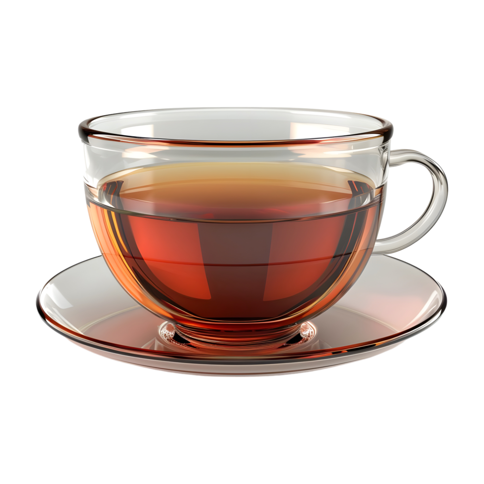

Brewing moments of tranquility

Annual per capita consumption (kg/person/year)
Ceylon Tea, from the island nation of Sri Lanka (formerly Ceylon), is renowned worldwide for its exceptional quality, distinctive flavor, and rich heritage dating back to 1867.
High Grown (above 4,000ft): Delicate, fragrant teas from Nuwara Eliya and Uva regions with bright, crisp flavors.
Medium Grown (2,000-4,000ft): Well-balanced teas from Kandy and Dimbula with rich taste.
Low Grown (below 2,000ft): Full-bodied, robust teas from Ruhuna with strong character.
Sri Lanka is the world's 4th largest tea producer and the 2nd largest exporter of orthodox tea globally.
Ceylon Tea accounts for approximately 19% of global tea exports, reaching over 140 countries.
Annual production: ~300,000 metric tons.
Ceylon Tea is 100% pure, with no additives or preservatives. The Lion Logo certifies authenticity.
Varieties include black, green, white, and oolong teas, each with distinct profiles influenced by terroir.
Hand-picked using the "two leaves and a bud" method for premium quality.
Tea was introduced to Sri Lanka by James Taylor in 1867 in Loolecondera Estate, Kandy.
The industry flourished after the coffee blight of 1869, transforming the island's economy.
Over 150 years of tea heritage with traditional methods still preserved.
Nuwara Eliya: "Champagne of Ceylon Tea" - light, delicate, with floral notes.
Dimbula: Bright, full-bodied with excellent aroma.
Uva: Distinctive seasonal quality with subtle hints.
Tea industry employs over 1 million Sri Lankans directly and indirectly.
Contributes approximately 2% to Sri Lanka's GDP and 15% to export earnings.
One of the oldest and most sustainable plantation industries in the country.
Tea was first discovered in ancient China around 2737 BCE, when leaves from a wild tree blew into Emperor Shen Nung's boiling water.
Tea is the second most consumed beverage in the world after water, with over 3 billion cups consumed daily.
All true teas (black, green, white, oolong, pu-erh) come from the same plant: Camellia sinensis. The difference is in processing.
Tea is rich in antioxidants called polyphenols, which may help reduce the risk of chronic diseases and improve heart health.
The British drink an estimated 100 million cups of tea every day, or 36 billion cups per year.
The finest teas are often grown at high altitudes where cooler temperatures slow growth, allowing more complex flavors to develop.
China produces about 40% of the world's tea, followed by India, Kenya, and Sri Lanka (Taprobane).
Green tea should be brewed at 160-180°F (70-80°C), while black tea needs boiling water at 200-212°F (93-100°C).
Turkey has the highest per capita tea consumption in the world at approximately 3.5 kg per person per year.
Da-Hong Pao, a rare Chinese tea, can cost over $1.2 million per kilogram, making it more valuable than gold.
Tea plants can live for over 100 years, and some tea trees in China are over 3,000 years old and still producing leaves.
The Japanese tea ceremony (Chanoyu) is a choreographed ritual of preparing and serving matcha green tea, representing harmony, respect, purity, and tranquility.